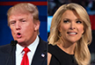
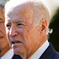
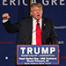
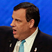
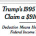

-
-
Trump‘They’re
rapists…June 2015 -
TrumpTrump knocks
McCainJuly 2015 -
TrumpTrump attacks
KellyAugust 2015 -
Bernie"Damn
emails!"October 2015 -
TrumpRally
violenceOctober 2015 -
BidenBiden
bows outOctober 2015 -
TrumpMuslim
BanDecember 2015 -
GOP DebatesChristie
vs. RubioFebruary 2016 -
ComeyHillary off
the hookJuly 2016 -
HillaryBasket of
DeplorablesSeptember 2016 -
HillaryHillary’s
healthSeptember 2016 -
TrumpFat
ShamingSeptember 2016 -
TrumpTrump’s taxes
revealedOctober 2016 -
 WikiLeaksEmails
WikiLeaksEmails
leakedOctober 2016 -
TrumpLewd Trump
tapeOctober 2016 -
 TrumpI’ll keep you
TrumpI’ll keep you
in suspense’October 2016
-
In the view from 30,000 feet, the narrative of the election seems clear, almost foreordained. Both of the eventual nominees led from early on in the primary polling, and were roughly tied from right after the conventions until the early fall, when Clinton began building a lead that grew week by week.
But as it was lived day to day — by the candidates, their aides and the reporters who covered them — the campaign’s arc is a jagged series of hair-raising surprises, of inflection points, near-fatal collapses and miraculous recoveries. An envelope arrives anonymously at the New York Times with three sheets of paper, leading to speculation that Donald Trump avoided paying federal income tax for years (bad!), but the document-dump that many expected would follow, blowing off the lid on his foreign business dealings, never materializes (good!). The FBI director says Hillary Clinton’s treatment of classified information appears to have violated the law (bad!), but he’s not recommending prosecution (good!). Trump attacks the heroism of John McCain (bad!) but defies predictions and actually gains afterward in the polls (good!).
And most baffling and poignant of all, Jeb Bush wrestles with the legacy of his brother, President George W. Bush, and loses. Over the course of two days in May 2015, he said the invasion of Iraq was a good idea, even in retrospect (bad!), then says he misunderstood the question (worse!) and was answering a hypothetical based on the information available at the time, ending up with a confession that he wasn’t sure how he would have decided (catastrophic! The man is running for president and he can’t take a position on the most consequential foreign policy issue of the century). His campaign never recovered, and generations of candidates yet unborn will study Bush’s handling of the most obvious question a candidate named Bush would face as a lesson in how not to run for president.
There were too many such critical moments and seminal events in the 2016 race to cover more than a fraction of them. And there might still be others, right up until Election Day. On the heels of the Miss Universe ambush, the “Access Hollywood” bombshell and the WikiLeaks shock, the candidates would be wise to prepare for the possibility of a November Surprise.
But here is our list of some of the other crucial turning points in the 2016 race.
Click on dates or arrows in the above timeline to see those moments.
-
Trump launches campaign with attack on Mexicans
June 16th, 2015Of all the things that have been bellowed, sneered, muttered or blurted out in the 2016 campaign, the one likely to live longest in memory is Donald Trump’s two-word dismissal of Mexican immigrants in his announcement speech on June 16, 2015: “They’re rapists.” That was only part of his rant about Mexico’s “sending people that have lots of problems” across the border: “They’re bringing drugs. They’re bringing crime. They’re rapists. And some, I assume, are good people.” He packed a number of questionable assertions into that passage. There is no evidence — indeed, evidence to the contrary — that immigrants commit more crimes than native-born citizens. The “problems” that afflict border crossers are mostly that they are poor or, in some cases, fleeing gang violence at home. And Mexico isn’t “sending” them. They are, by and large coming of their own volition, looking for work. But the graphic specificity of “rapists” is what stuck in most listeners’ minds.
At the time, though, this part of the speech was mostly overlooked in newspaper articles that focused on the opulence of the Trump Tower setting, his grandiose boasts about his fortune — and the unlikelihood of his becoming the nominee. The New York Times gave it a passing mention in the 19th paragraph of a story that began, “Donald J. Trump, the garrulous real estate developer whose name has adorned apartment buildings, hotels, Trump-brand neckties and Trump-brand steaks, announced on Tuesday his entry into the 2016 presidential race, brandishing his wealth and fame as chief qualifications in an improbable quest for the Republican nomination.” The Washington Post article on the announcement didn’t mention “rapists” at all.
The repercussions began a few days later, helped along by Hillary Clinton, who, without naming Trump, mentioned to reporters that a candidate had recently “said some very inflammatory things about Mexicans — you don’t talk like that” in political campaigns. Within a week, Univision, the Spanish-language network, said it would drop the Miss USA and Miss Universe pageants, partly owned by Trump. Then NBC, a co-owner of the pageants, sold its share back to Trump, who promptly unloaded his entire stake to the entertainment conglomerate WME-IMG. For good measure, NBC dropped Trump as host of “Celebrity Apprentice,” where he was to be replaced by Arnold Schwarzenegger.
Unlike some things he has said, this is one thing Trump never denied saying. Nor did he apologize or qualify it. On the contrary, he repeated it numerous times in interviews and speeches, casting it as a simple matter of fact and adding “killers” and “murderers” to the roster of undesirables coming across the border. He did, however, milk the controversy for its media-bashing potential, charging reporters with attempting “to distort my comments regarding Mexico and its great people," adding that he has "tremendous respect for the leaders of Mexico.” His campaign complained that the context of his remarks got stripped away, and the gist boiled down, by Democratic vice-presidential candidate Tim Kaine, among others, to “all Mexicans are rapists,” which, in fairness, was not what he said.
The remark still haunted him, though, as late as this August, when Trump impulsively flew to Mexico to meet with that country’s president amid conflicting reports that he was softening his hard-line immigration stance. Then he gave a fiery speech that took it all back, prompting some of the few Hispanic leaders who had endorsed him to change their mind. Recent polls showed him trailing Clinton by anywhere from 24 to 50 points among Hispanics in various states.
In Mexico itself, he recently polled at 2 percent. By Jerry Adler
RELATED LINKS
Story: On the issues: Donald Trump as presidential candidate »
-
‘He’s a war hero ’cause he was captured. I like people that weren’t captured.’
July 18th, 2015Remember Donald Trump?
The New York real-estate developer and reality-show star announced his candidacy for president in June 2015 and within a month had blown up his campaign with a jaw-dropping attack on a Republican icon, Arizona Sen. John McCain.
“He is not a war hero,” Trump told pollster Frank Luntz, who was hosting an interview session at the Family Leadership Summit in Ames, Iowa. McCain had been at odds with Trump over his proposal for a harsh crackdown on immigration from Mexico.
“He is a war hero,” Luntz interjected.
“He is a war hero because he was captured,” Trump said, cutting him off. “I like people that weren’t captured, OK?”
These remarks — from someone who had escaped the draft (because of “bone spurs” in his heels) at the height of the Vietnam War, directed at a former Navy flier and POW who had refused early repatriation without his fellow prisoners — were denounced across the political spectrum, and resulted in widespread predictions of his imminent political demise. Politico’s judgment — “Donald Trump may have finally crossed the line” — was one of the milder reactions.
Foreshadowing his defense in future contretemps, Trump denied the plain meaning of his remarks (“Four times I said he was a hero”) but refused to back down or apologize. If you don’t remember him dropping out in disgrace, it’s because he didn’t; in what was widely seen as a minor miracle, less than two weeks after he made the comments, polls showed him leading the Republican field by a wide margin. It was a miracle that was to occur many times during the next year, as Trump managed to turn outrage over statements that were, by most standards, outrageous into a principled refusal to bow to political correctness.
The episode also inaugurated Trump’s complicated relationship with the military. During his campaign he went out of his way to praise veterans, to denounce their treatment by the Obama administration, and to boast about his generosity toward them — a boast that turned into an embarrassment in May when the Washington Post reported that he had yet to make good on a pledge to donate $1 million to veterans charities. (Shortly afterward, Trump sent the entire amount to the Marine Corps-Law Enforcement Foundation, which supports the families of Marines and police killed in the line of duty.) Then after the Democratic convention, he picked a fight with Khizr and Ghazala Khan, the Pakistani-American parents of an Army captain killed in action in Iraq. That earned him a ringing denunciation from the Veterans of Foreign Wars. He mocked the nation’s top military leaders as weak and stupid, claimed to “know more about ISIS than the generals do,” and implied he would clean house at the Pentagon if he became president.
Set those gaffes against Trump’s swaggering, bellicose demeanor and popularity in the Southern and border states that disproportionately populate the military, and his ringing but vague promises to reverse what he describes as the precipitous decline in American military power under Obama. Which do you think won out?
As of early October, the verdict was in: Trump was leading Clinton among veterans by 14 points. By Jerry Adler
-
‘There was blood coming out of her eyes, blood coming out of her … wherever.’
August 7th, 2015Donald Trump had every reason to expect an easy time at the first Republican debate, in August 2015: It was hosted by Fox News, run by Trump’s close friend Roger Ailes. But instead he found himself answering a question from Fox anchor Megyn Kelly about the times he called women “fat pigs, dogs, slobs and disgusting animals,” which was more than a little counterproductive to his goal of being taken seriously as a candidate for president.
Questioned afterward about the exchange by CNN’s Don Lemon, he gave his expert opinion of Kelly’s journalistic credentials — “highly overrated,” “a lightweight,” “not very sharp” — and her demeanor: “You could see there was blood coming out of her eyes, blood coming out of her … wherever.”
It is a seminal text in the annals of Trumpology, endlessly debated and parsed. Did he actually say, or intend to say, “out of her whatever,” as his campaign aides told reporters the next day — implying that it was just a way to get past the subject and move the interview along?
Or, as his own subsequent explanation had it, was he thinking of her nose or ears?
Or did he have another orifice in mind altogether? Was he suggesting that Kelly was in a bad mood because she was menstruating?
The very notion offended Trump to his core. “Who would say that?” he erupted indignantly to Jake Tapper of CNN. "Do you think I'd make a statement like that? Who would make a statement like that? Only a sick person would even think about that."
The contretemps got Trump disinvited to Erick Erickson’s Red State Gathering, an important event on the calendar for aspiring Republican candidates. (“This guy’s a loser” was Trump’s response.) And it triggered a head-spinning sequence of spats and reconciliations of Shakespearean complexity among Trump, Kelly, Ailes, several other Fox anchors and Ailes’ boss Rupert Murdoch—one that ended only when Ailes got kicked out of his job following allegations of sexual harassment by a number of women at Fox, including, as some accounts have it, Megyn Kelly.
Ailes went on to become an informal adviser to Trump, who has insisted all along he has nothing to apologize for. He explained his position to that increasingly vital source of political news, the Hollywood Reporter:
“I believe in apologizing. But to apologize for me is very difficult. I definitely would apologize if I were wrong on something.”
He was asked: “What was the last thing you apologized for?”
And he replied: “It was too many years ago to remember. I have one of the great memories of all time, but it was too long ago.” By Jerry Adler
-
‘The American people are sick and tired of hearing about your damn emails!’
October 13th, 2015There were still five candidates in the running and on the stage at the first Democratic primary debate last October. But the focus was all on Hillary Clinton, the commanding frontrunner, and on Sen. Bernie Sanders, who had been narrowing the polling gap as Clinton faced persistent questions and insinuations about the private email server she had installed at her home in Chappaqua, N.Y.
So no one in the audience at the Wynn Las Vegas was surprised when Clinton, responding to CNN anchor Anderson Cooper, gave the default answer of politicians facing an awkward question, that she would rather talk about “the issues that matter to the American people.”
But viewers may have been surprised when Sanders stepped in with a comment that he acknowledged “may not be great politics. I think the secretary is right,” he went on, “— that the American people are sick and tired of hearing about your damn emails.”
“Thank you!” a beaming Clinton replied. “Me too! Me too!”
It was considered a shrewd move by Sanders, who got to present himself as a high-minded statesman, and who probably read the mood of the Democratic primary voters correctly; they (if not “the American people” altogether) were indeed sick and tired of the email issue. And it allowed him to segue into his list of the issues that he thought mattered to the American people: “Middle class in this country are collapsing,” he said. “We have 27 million people living in poverty. We have massive income inequality. Our trade policies have cost us millions of decent jobs.”
Watch Clinton as he speaks, and you can see the smile fade and the nods stop as Sanders runs through these implicit failures by the Obama administration. But the encounter ended happily with a much-tweeted photograph of a delighted Clinton shaking Sanders’ hand. And even if the race eventually became considerably more heated, the residue of unity forged in that moment made it possible for Sanders to endorse and enthusiastically campaign for Clinton — a reconciliation that some of Donald Trump’s rivals, notably Jeb Bush, have never achieved. By Jerry Adler
-
‘I’d like to punch him in the face, I’ll tell you that.’
October 14th, 2015Strong emotions are common at political rallies — that’s what they’re for, after all. Even politicians as cerebral as Barack Obama are not above calling on their followers to “fight” for their party. But Donald Trump, channeling a stream of grassroots belligerence that has surfaced repeatedly this year, is the first presidential candidate in modern times to seem to mean it literally.
Trump’s rallies were, from the outset, highly charged and frequently raucous events, and they drew protesters as well as supporters. One of them, a local activist in Birmingham, Ala., interrupted Trump’s speech there last November by shouting “Black lives matter,” precipitating a scuffle with others in the crowd. According to the Washington Post, reviewing video from CNN, Southall was knocked to the floor and “surrounded by several white men who appeared to be kicking and punching him.”
“Get him the hell out of here!” Trump bellowed from the stage, in accordance with his policy until then that protesters should be ejected but not harmed. “Get him the hell out!”
The next day, though, Trump seemed to suggest that Southall — who was not seriously injured — had gotten off too lightly. “Maybe he should have been roughed up, because it was absolutely disgusting what he was doing,” he told Fox News. (Trump’s spokeswoman, Hope Hicks, later issued a clarification, saying that “the campaign does not condone this type of behavior.”)
That was just the buildup for a confrontation several months later, when Trump volunteered himself to do the roughing up. As a protester was being ejected from a rally in Las Vegas, Trump interrupted his speech to complain that “the guards are being very gentle with him.” He told the crowd that the man had been throwing punches, something witnessed by none of the reporters who were at the rally.
“I’d like to punch him in the face, I’ll tell ya that,” Trump went on, lamenting the passing of a time when hecklers “would be carried out on a stretcher.”
Violence, on the part of both supporters and protesters, continued to plague the campaign; in March a rally at the University of Illinois at Chicago was canceled when a large crowd awaiting the candidate’s arrival became unruly. As of mid-October, luckily, no one had been killed and the reported injuries were mostly minor. But Trump was put on notice that at least one unhappy voter made a video about wanting to punch him in the face. It was Robert De Niro. By Jerry Adler
-
Biden announces he won’t enter the race
October 21st, 2015Joe Biden is 73, older than Donald Trump or Hillary Clinton, who are among the oldest presidential nominees ever. He suffered a devastating emotional blow in May 2015, with the death of his son and political heir, Beau. After a lifetime in politics, he joked recently that he has less money in the bank than Bernie Sanders. If he had run for president this year, he would have had an uphill struggle to overcome the “Obama fatigue” factor that has hampered Hillary Clinton at times during her campaign.
But he nearly did run. As recently as the summer of 2015, reports surfaced that he was being encouraged by friends to enter the race, that he was exploring his options and that he was close to a decision. In September, still grieving, he discussed his reservations, musing that “Nobody has a right … to seek that office unless they’re willing to give it 110 percent.” But almost until the start of the first Democratic primary debate, on Oct. 13, organizers were prepared for a possible last-second announcement.
A week later, he put the speculation to rest as he addressed the country from the Rose Garden, with his wife, Jill, and President Obama at his side. He said he had overcome his doubts about his commitment, but that it was no longer possible to raise the tens of millions of dollars he would need for a run while also campaigning in the early voting states. “As my family and I have worked through the grieving process, I've said all along that it may very well be that that process closes the window on mounting a realistic campaign for president, and I've concluded it has closed,” he said, with evident regret, writing the final chapter in his long and storied political career.
Biden possessed formidable political skills — a genial manner and a rare (for a Democrat) ability to connect with blue-collar voters — offset at times by a propensity for goofiness and mildly embarrassing gaffes. It’s not at all clear how a three-way race among Biden, Clinton and Sanders would have played out, but political pundits suspect that if he had actually been nominated, he would be running away from Donald Trump. Democrats nervously looking over their shoulders, heading into an election with a candidate who, for all her strengths, seems unable to shake the “I just don’t like her” label, might have welcomed the chance to find out. By Jerry Adler
-
‘Donald J. Trump is calling for a total and complete shutdown of Muslims entering the United States.’
December 7, 2015For those who were paying close attention, it should have come as no great surprise. In an interview with Hunter Walker of Yahoo News last November, Donald Trump had warned that in the face of terror attacks, “We’re going to have to do things that we never did before. And some people are going to be upset about it.” Yahoo News asked Trump whether this might extend to registering Muslims in a database or giving them a form of special identification that noted their religion. He wouldn’t rule it out.
That was a few weeks before Syed Rizwan Farook, an American citizen born in Chicago to Pakistani immigrants, together with his Pakistani-born wife, a legal permanent resident, shot up a meeting of the county health department — Farook’s employer — in San Bernardino, Calif., killing 14. And just days after that attack, Trump stood up at a rally in Mount Pleasant, S.C., and read a written statement his campaign had released earlier in the day. It began, “Donald J. Trump is calling for a total and complete shutdown of Muslims entering the United States until our country's representatives can figure out what the hell is going on.”
So there had been a warning, but the world was still shocked by this unprecedented call to exclude 1.6 billion people, about a quarter of the world’s population, from entering the United States. “Until we are able to determine and understand this problem and the dangerous threat it poses,” Trump’s statement continued, “our country cannot be the victims [sic] of horrendous attacks by people that believe only in jihad, and have no sense of reason or respect for human life.” Many reporters couldn’t believe what they heard, but they were set straight by his campaign aides. His campaign manager, Corey Lewandowski, assured Bloomberg that the policy would apply to “everyone” who is a Muslim, including those applying for permanent residency as well as non-immigrant visas as a tourist or student. A spokeswoman, when asked what inspired the policy, said Trump’s answer was “death.”
His Republican rivals were quick to pounce, although, as the primary results would show, in the wrong direction. “Donald Trump is unhinged,” was Jeb Bush’s reaction. New Jersey Gov. Chris Christie, still months away from dropping out and endorsing Trump, called it “a ridiculous view” and “the kind of things that people say when they have no experience and don’t know what they’re talking about.”
The statement also captured the attention of the world, especially parts of the world — such as America’s closest ally, Great Britain — whose citizens might be affected by it. Over the ensuing months, Trump qualified and hedged it, suggesting at one point it might apply only to citizens of “any nation that has been compromised by terrorism,” which some characterized as a narrowing of the ban but he insisted was actually an “expansion.”
“People were so upset when I used the word ‘Muslim,’” Trump explained, sort of, to Chuck Todd. “‘Oh, you can’t use the word Muslim.’ Remember this. And I’m OK with that, because I’m talking territory instead of Muslim.”
He succeeded, at least, in creating enough confusion that when his running mate, Mike Pence was asked on Morning Joe if a total ban on Muslims entering the country was still the campaign’s position, he could confidently answer, “of course not.” But as of mid-October, the statement was still on Trump’s website. By Jerry Adler
-
Christie takes down Robot Rubio
February 6, 2016It is wisdom handed down by generations of campaign managers to aspiring candidates, the political equivalent of “hit ’em where they ain’t”: stick to your talking points. That advice works well, unless — like Sen. Marco Rubio — you end up with your talking points stuck to you, like gum on your shoe.
The Florida senator came into the Feb. 6 debate at Saint Anselm College as the putative man to beat in New Hampshire, coming off his unexpected third-place finish in the Iowa caucuses. But then he ran into a political buzz saw named Chris Christie, the New Jersey governor who saw Rubio as an obstacle to his own path to the nomination.
Rubio should have seen it coming, the New York Times reported, although its account was disputed by the senator’s aides. As the men waited backstage before the debate, Rubio supposedly remarked (“playfully,” according to the Times): “I understand I am going to have a hard time tonight,” and Christie replied: “Yes, you are.” But it came from an unexpected direction, during an anodyne exchange about whose experience better qualified them to be president. Rubio inexplicably launched into a set-piece attack on Barack Obama:
“Let’s dispel with this fiction that Barack Obama doesn’t know what he’s doing. He knows exactly what he’s doing. He is trying to change this country. He wants America to become more like the rest of the world…”
This fragment from Rubio’s stump speech referenced an arcane debate among Republicans about whether Obama was a callow incompetent who had landed in the Oval Office by affirmative action or a sinister manipulator bent on implementing Saul Alinsky’s plan for America’s destruction. Rubio realized that the “Obama is in over his head” case could be turned against him, as another first-term senator making an audacious bid for the White House, so he was arguing for Obama as evil genius.
Only he said it again, a few moments later, in almost the identical words.
“Here’s the bottom line. This notion that Barack Obama doesn’t know what he’s doing is just not true. He knows exactly what he’s doing.”
Gleefully, Christie pounced:
“There it is. There it is. The memorized 25-second speech. There it is, everybody.”
A few seconds later, Rubio proved exactly what Christie was saying:
“We are not facing a president that doesn’t know what he’s doing. He knows what he is doing.”
Even then, Rubio didn’t seem to understand that he’d done anything wrong — after all, that was his talking point — but within hours the reviews started coming in, and they were brutal. A candidacy built almost entirely on Rubio’s putative skills as a candidate was collapsing along with his reputation.
The man who was supposed to head off Donald Trump in New Hampshire wound up back in fifth place — although ahead of Christie, who dropped out himself after coming in sixth. Dogged by Democratic trolls in homemade robot costumes, Rubio soldiered on, leaving the race in March after a loss in his home state of Florida. And the rest, of course, is history: Christie endorsed Trump and was rewarded with a job heading Trump’s transition team and, many observers surmise, the promise of a cabinet post in a Trump administration. But a more likely scenario is that Rubio, who scrambled back into the race for his Senate seat, will stay in Washington, while Christie, up against New Jersey term limits and seriously tarnished by the “Bridgegate” scandal in his home state, may be looking for work in the private sector after next year. By Jerry Adler
-
FBI director calls Clinton’s email setup ‘extremely careless’
July 7, 2016There are many who would say that Hillary Clinton dodged a bullet in July when FBI Director James Comey recommended against prosecuting her for mishandling classified information while she was secretary of state — a recommendation that Attorney General Loretta Lynch had already said she would accept.
Obviously, bringing a case against her would have been much worse, probably fatal, for her campaign, just weeks before she was to accept the Democratic nomination. But Comey earned no gratitude from her aides over the way he coupled a legal exoneration with a pointed criticism of how Clinton ran her office: “Although we did not find clear evidence that Secretary Clinton or her colleagues intended to violate laws governing the handling of classified information, there is evidence that they were extremely careless in their handling of very sensitive, highly classified information.”
And if she dodged a bullet, there was no denying that she’d loaded the gun herself, with her decision at the outset of her tenure to use a personal email address on a private server rather than her official government one. Her inability to give a convincing and consistent explanation for that arrangement, and the deletion of tens of thousands of emails from her server just as they were being sought for a Congressional investigation has haunted her entire campaign.
The question is whether any of this rose to the level of a crime. “There is evidence of potential violations of the statutes regarding the handling of classified information,” Comey said. But, he added, “our judgment is that no reasonable prosecutor would bring such a case.” Previous prosecutions for mishandling classified information involved exacerbating circumstances, such as “intentional misconduct, or indications of disloyalty to the United States or efforts to obstruct justice. We do not see those things here.”
That didn’t satisfy Donald Trump, who said at a rally in Florida on Oct. 13 that Comey "let her off the hook while other lives, including Gen. [David] Petraeus and many others, have been destroyed for doing far, far less. This is a conspiracy against you, the American people, and we cannot let this happen or continue.”
But Comey, in testimony at a congressional hearing, had already dismissed the comparison with Petraeus, who pled guilty to a misdemeanor in 2015 and was sentenced to a fine and probation. Petraeus, he noted, had taken “a vast quantity of information,” including top-secret codes, to share with his mistress, who also wrote his biography, and then lied about it to the FBI. “That is a perfect illustration of the kind of cases that get prosecuted,” Comey said. “In my mind, it illustrates importantly the distinction to this (Clinton) case.”
But that didn’t stop the chants that have been heard at Trump rallies all through the campaign: “Lock her up!” By Jerry Adler
-
Clinton dubs Trump supporters ‘deplorables’
September 9th, 2016There’s something about being in the presence of wealthy donors that seems to loosen candidates’ tongues. In 2008, it was Barack Obama, riffing at a fundraiser about “bitter” voters clinging “to guns or religion or antipathy to people who aren’t like them.” In 2012, it was Mitt Romney musing at a fundraiser about the “47 percent of the people” who “believe they are victims … believe they are entitled to health care, to food, to housing.”
In 2016 it was Hillary Clinton’s turn to say something inflammatory at a fundraiser and see it used against her. Speaking at a New York City event aimed at the LGBT community and featuring Barbra Streisand, Clinton memorably gave this “grossly generalistic” assessment:
“You can put half of Trump supporters into what I call the 'basket of deplorables.' Right? Racist, sexist, homophobic, xenophobic, Islamophobic, you name it. And unfortunately there are people like that, and he has lifted them up.”
She went on, less memorably, to talk about “that other basket of people who feel that the government has let them down, the economy has let them down, nobody cares about them … and they’re just desperate for change.” But the damage was done, and the Trump campaign seized on the remarks within hours, saying they “revealed just how little she thinks of the hard-working men and women of America.”
“Wow, Hillary Clinton was SO INSULTING to my supporters, millions of amazing, hard working people. I think it will cost her at the polls!” Trump tweeted.
The comments violated a cardinal rule of campaigning: Say what you want about your opponent, but never insult the voters. Clinton issued a statement the next day with the awkward justification that she got her fractions wrong:
“Last night I was ‘grossly generalistic,’ and that's never a good idea. I regret saying ‘half’ -- that was wrong.”
And Trump, for his part, took the high road, tweeting:
"While Hillary said horrible things about my supporters, and while many of her supporters will never vote for me, I still respect them all!"
Whatever the long-term effects of the gaffe, it provided a reminder to all future candidates of a lesson David Axelrod, the chief strategist of Obama’s first presidential run, learned the hard way:
“Fundraiser remarks are treacherous things.” By Jerry Adler
-
Clinton stumbles at 9/11 memorial
September 11th, 2016It was the stumble heard, or at least seen, around the world: Hillary Clinton, leaving the 9/11 memorial service early, nearly collapsing into the arms of her security detail and needing to be half-carried into her car. It came at the worst possible time for her campaign, following weeks of heated innuendo, primarily by Fox News’ Sean Hannity, about Clinton’s health.
It’s a matter of record that Clinton, dehydrated as a result of a stomach virus, fainted and fell at her home in 2012, hitting her head and suffering a concussion and a blood clot that left her with vision problems for several months. On that foundation, Hannity and other right-wing media sources built a tower of speculation — that Clinton had trouble climbing stairs, that her “weird pauses” and “wild, out-of-control movements” signified neurological problems, that she needed an injector pen to head off seizures. (The device carried by a Secret Service agent turned out to be a small flashlight.) Author Ed Klein went even further, claiming that Clinton “frequently faints or swoons” at her home, an observation he attributed to unnamed “friends and associates,” raising the question of who, in Clinton’s notoriously protective inner circle, would share this information with Klein, a well-known Clinton antagonist.
And then she stumbled. As often happened in the campaign, her aides made matters worse by putting out a belated statement attributing the spell to “dehydration,” before admitting that she had been diagnosed days earlier with pneumonia. Even sympathetic commentators like David Axelrod were put off by how it was handled. “Antibiotics can take care of pneumonia,” he tweeted. “What’s the cure for an unhealthy penchant for privacy that repeatedly creates unnecessary problems?"
To the Trump campaign, of course, it was a godsend. Donald Trump’s initial reaction was to wish her a speedy recovery, but soon afterward, he reverted to form with a remark intended to let listeners infer the worst, without saying anything provably false: “They say pneumonia on Friday, but she was coughing very, very badly a week ago, and even before that, if you remember. This wasn’t the first time. So, it’s very interesting to see what is going on.”
As the campaign moved into its final weeks, Trump kept up the attacks on Clinton’s “stamina,” mocking her stumble on the podium at a rally and releasing an ad about it with the ominous tagline “Don’t let her fail us again.” And at a rally in early October, he speculated on this baroque, if hypothetical, scenario:
“When she’s over in China, if she goes down, in Tiananmen Square, they’ll just leave her there.”
It is true, of course, that Clinton is one of the oldest people ever to run for president; on Oct. 26, she turns 69, making her one year younger than Trump. By Jerry Adler
-
Trump fat-shames a former Miss Universe
September 26, 2016Donald Trump never saw it coming, but with his limitless confidence in his ability to bluster through any confrontation, he didn’t think he needed to. Hillary Clinton laid the trap expertly, although it took some rhetorical contortions to drag it into place, just before the end of the first presidential debate.
It began with a question from Lester Holt about Trump’s remark that Clinton lacked a “presidential look,” which Trump may have sensed was dangerous territory, so he responded with one of his favorite attack lines, her lack of “stamina.” Clinton turned the subject back to looks, and Trump’s proclivity for calling women “pigs, slobs and dogs.”
“And one of the worst things he said,” she went on triumphantly, “was about a woman in a beauty contest. … He called this woman ‘Miss Piggy.’ Then he called her ‘Miss Housekeeping,’ because she was Latina. Donald, she has a name.”
And Trump, coming across like a Perry Mason villain who has just been shown the murder weapon on the witness stand, blurts out:
“Where did you find this? Where did you find this?”
Her name is Alicia Machado, a Venezuelan-born actress who was Miss Universe in 1996, the year Trump bought the contest and appointed himself executive producer. As described in a video the Clinton campaign had prepared in advance and released right afterward, she had gained weight after winning the contest and no longer met Trump’s exacting standards of beauty. So he berated and insulted her into dieting, inviting the media to film her in the gym. “She weighed 118 pounds or 117 pounds and she went up to 160 or 170, so this is somebody who likes to eat,” Trump smirked on camera.
“It turned into a circus, ‘The Fat Miss Universe,’” Machado says in the film.
As CNN commentator Ana Navarro wrote on Twitter, “hell hath no fury like a Latina who’s been called fat.” And yet Trump seemed to think this was a winning issue for him, phoning in to Fox News the morning after the debate to continue his diatribe about “the massive amount of weight” Machado had gained. Three days later, in what has been called the “3 a.m. tweetstorm,” he sent out a series of Twitter messages in the middle of the night, urging his followers to check out a “sex tape” of Machado. Conservative media dug out some details of her past that suggested she fell short of being an ideal role model for America’s young girls, but a sex tape wasn’t among them.
As the Clinton campaign rolled out a powerful ad that juxtaposed Trump’s demeaning comments about women with images of young girls staring into mirrors, Republicans were seeing grim confirmation of their suspicions that their candidate was his own worst enemy.
“It makes no sense,” Frank Luntz, a GOP strategist, said. He said that focus groups that he had conducted had shown that Mr. Trump should be hammering Mrs. Clinton on issues like the national debt and the Islamic State. “Instead, he’s in a fight with a beauty queen.” By Jerry Adler
-
Trump’s 1995 tax information leaked to the New York Times
October 1, 2016It was the Rosebud moment in the saga of Donald Trump, the long-awaited bombshell of the 2016 campaign, for which New York Times executive editor Dean Baquet was willing to go to jail if he had to. But in the end, it raised as many questions as it answered.
It is, of course, the now famous leak of three pages from Trump’s 1995 tax returns, which the Times published on October 2, after receiving them anonymously in the mail and verifying their authenticity with his former accountant.
Journalists — and political rivals — had been asking to see Trump’s returns ever since he entered the race, a routine disclosure for every presidential nominee since at least 1980. He had made vague promises that “we’ll get them out at some point, probably,” before changing his mind, saying his taxes were being audited and would only be made public when the IRS audit was finished — which, as former IRS commissioner Fred Goldberg wrote, might well be never.
Nothing, including an audit, is preventing him from releasing his returns, leading to speculation about what he was trying to hide. Hillary Clinton summarized four possible explanations at the first presidential debate: he’s not as rich as says he is; he doesn’t give away much money to charity; his business dealings, especially with foreign banks or partners, could be embarrassing for a potential president of the United States; or he paid little or nothing in federal income taxes — a possibility Trump seemed to implicitly endorse when he interjected “that makes me smart.”
Just how smart was hinted at in the documents — just a single page from each of three 1995 state returns — which showed a jaw-dropping business loss for that year of nearly $916 million. As the Times pointed out, a loss of that amount could offset an equivalent amount of income for as long as 18 years.
The Trump campaign neither confirmed nor denied the Times story, but put its own spin on it with a statement saying “Mr. Trump is a highly skilled businessman who has a fiduciary responsibility to his business, his family and his employees to pay no more tax than legally required.” At issue, of course, were his personal taxes, for which he had no “fiduciary responsibility” to anyone. In the second presidential debate, moderator Anderson Cooper tried to pin Trump down on that question, leading to this exchange:
COOPER: So can you — can you say how many years you have avoided paying personal federal income taxes?TRUMP: No, but I pay tax, and I pay federal tax too. But I have a write-off, a lot of it’s depreciation, which is a wonderful charge. I love depreciation.
The issue dominated the news for a week, more or less — right up until the release of the next bombshell, the tape of Trump boasting about groping and forcing himself on attractive women — and accelerated a slide in the polls that began with the first debate.
But it didn’t come close to resolving the many open questions about Trump’s business dealings — questions that now may never be answered. Depending on what happens Nov. 8, it might not matter. By Jerry Adler
-
WikiLeaks dumps thousands of Clinton campaign emails
October 7, 2016What does WikiLeaks have? The question buzzed around U.S. political circles for weeks after founder Julian Assange, who has been holed up in the Ecuadorian Embassy in London to avoid rape charges in Sweden, teased reporters about “interesting and serious” documents his group was about to publish. Then, on Oct. 7, WikiLeaks unloaded. “RELEASE: The Podesta Emails,” the group tweeted at 4:32 p.m., linking to the first tranche of thousands of private messages sent by and to John Podesta, Hillary Clinton’s campaign chairman. It was a pivotal moment in the 2016 election. The Clinton campaign — and the U.S. intelligence community — blamed the dump on the fruits of a state-sponsored Russian cyberattack. Still, the emails provided a revealing and embarrassing window into the inner workings of the Clinton campaign.
The biggest headline: verbatim excerpts, flagged as potentially problematic by campaign aides, from the high-dollar speeches Clinton gave to Goldman Sachs and other big banks — the very speeches whose transcripts she had refused to release when Bernie Sanders pounded her over them during the Democratic primary. In some cases, the excerpts showed exactly what Sanders supporters (and many in the media) had always suspected: Clinton was far cozier with Wall Street bankers behind closed doors than she was in public. “The people that know the industry better than anybody are the people that work in the industry,” she said in one talk about crafting financial regulations. “You need both a public and private position,” she said in another. And there was plenty more on other fronts, including embarrassing tiffs among Clinton insiders. After Chelsea Clinton accused Doug Band, one of her father’s top aides, of “hustling” corporate clients while working for the Clinton Foundation, Band fired back: Chelsea was acting like a “spoiled brat kid,” he wrote.
The emails, had they come earlier in the year, would have provided plentiful of ammunition for Clinton’s critics — and would have made her path to the nomination even rockier than it was. But since they came late in the political season, and at a time when much of the media was obsessing over Donald Trump’s sexual peccadillos, the Clinton campaign was able to finesse the emails (mostly by refusing to authenticate them, given the Russians’ apparent role as intermediaries.) Still, they had an impact, underscoring Clinton’s vulnerabilities as a candidate. And, for better or worse, they helped to restore WikiLeaks — a rogue operation that traffics in all sorts of stolen documents — as a player to be feared on the world stage. By Michael Isikoff
-
‘Grab them by the p***y. You can do anything.’
October 7, 2016The Washington Post article was posted on Friday afternoon, Oct. 7, and for a few minutes work stopped dead in offices all over the country as Americans absorbed the unimaginable spectacle of a presidential candidate boasting about groping and forcibly kissing women, taking advantage of his stature as a “star.”
As the world now knows, the Post had obtained in-house video from 2005 of Trump bantering with Billy Bush of “Access Hollywood” as they rode together for a taping of a soap opera in which Trump made a cameo appearance.
“I did try and f*** her,” Trump says of one woman. “I moved on her like a bitch, but I couldn’t get there. And she was married.” He talked about his compulsion to kiss beautiful women, adding, “When you’re a star, they let you do it … Grab them by the p****. You can do anything.”
The gravity of this offense, and the impossibility of pretending he hadn’t actually said it, was underscored when Trump released an unprecedented video apology that very night. “I said it, I was wrong, and I apologize,” he said soberly. “I’ve never said I’m a perfect person, nor pretended to be someone that I’m not.”
For 24 hours or so, it looked as if Trump’s enemies in the Republican Party had finally found a stake they could impale him on. House Speaker Paul Ryan, the rubber band attaching him to Trump stretched almost to the breaking point, pronounced himself “sickened” by the comments and disinvited the candidate from a campaign event in Wisconsin. Trump’s running mate, Indiana Gov. Mike Pence, went into radio silence while election lawyers filled the airwaves with speculation about how Trump could be deposed as the Republican standard-bearer — a virtual impossibility as early voting had already begun in some states.
With the second presidential debate about to take place on Sunday, the party hunkered down and hoped for the best. Trump had, over the months, shown himself capable of amazing resurrections even from the gravest self-inflicted wounds.
But it was the debate itself that triggered a second wave of revelations, when Trump, after ducking several questions from moderator Anderson Cooper, denied that he had actually done what he had boasted about.
Cooper: Just for the record, though, are you saying that what you said on that bus 11 years ago that you did not actually kiss women without consent or grope women without consent?
Trump: I have great respect for women. Nobody has more respect for women than I do.
Cooper: So, for the record, you’re saying you never did that?
Trump: I’ve said things that, frankly, you hear these things I said. And I was embarrassed by it. But I have tremendous respect for women.
Cooper: Have you ever done those things?
Trump: And women have respect for me. And I will tell you: No, I have not.
At that very moment, in living rooms in Palm Beach, Fla., in Manhattan, and possibly other places, women allegedly erupted in outrage. Mindy McGillivray, who had been a photographer’s assistant during an event at Trump’s Mar-a-Lago resort 13 years earlier, told the Palm Beach Post she had jumped up and yelled at the TV: “You liar!” Standing in a group with Trump and Melania, his fiancée at the time, McGillivray felt his hand on her buttocks.
“I wanted to punch the screen,” recalled Jessica Leeds, who told the New York Times she had been sitting next to Trump on an airplane more than three decades earlier when he grabbed her breasts and tried to put his hand up her skirt.
By the end of the following week, about a dozen women had come forward with allegations of being assaulted by Trump — all of which he denied, casting himself as the victim of, to paraphrase, a vast left-wing conspiracy by the Clinton campaign, the media, and women desperate to get on television. If he was hoping to repair his reputation with women, he probably didn’t do himself a lot of good with comments that implied his accusers weren’t attractive enough for him to have bothered with.
Billy Bush, a cousin of Trump’s vanquished rival Jeb Bush, who had moved on to the “Today” show, was fired by NBC. By Jerry Adler
-
Trump refuses to say whether he’ll accept result of the election
October 19, 2016In an election that was all about Donald J. Trump, it was a moment that summed up what Trump himself was all about.
For days the GOP nominee — down in the polls, denounced by his fellow Republicans and fending off roughly a dozen different accusations of sexual misconduct — had been railing from the stump against what he described, without evidence, as a “rigged election.”
But no one had yet asked Trump the obvious question: Are you really prepared to break with centuries of proud democratic tradition and become the first presidential nominee in U.S. history to obstruct the peaceful transition of power?
Until the final debate, on Oct. 19, when the moderator, Chris Wallace, did pose that question.
“Your running mate Governor Pence pledged on Sunday that he and you (his words), ‘will absolutely accept the result of this election,’” Wallace said in Las Vegas. “Today, your daughter Ivanka said the same thing. I want to ask you here on the stage tonight: Do you make the same commitment that you’ll absolutely accept the result of the election?”
“I will look at it at the time,” Trump snapped. “I’m not looking at anything now. I'll look at it at the time.”
The audience actually gasped.
Wallace asked again, just to be sure.
“There is a tradition in this country,” he stammered, “that the loser concedes to the winner, and the country comes together, in part for the good of the country. Are you saying you’re not prepared now to commit to that principle?”
Again, Trump declined.
“I’ll keep you in suspense,” the mogul said with a smirk. “OK?”
In Las Vegas, Trump rambled on about his reasons for rejecting this core pillar of American democracy: because of the “corrupt media”; the “millions of people [who] are registered to vote who shouldn’t be registered to vote”; the fact that, in his expert legal opinion, Clinton “should not be allowed to run” in the first place.
But these weren’t Trump’s real reasons. Trump is a man who has spent his entire life insisting to himself, and to others, that he simply cannot lose. Other people are “losers.” He is a winner. Always. “We’re gonna win so much you’ll get tired of winning!” Trump would bellow in his speeches. “And you’ll say, ‘Please, please, it’s too much winning! We can’t take it anymore!’”
In business, Trump learned to do whatever it took to “win,” or at least to convince himself and others that he was winning: borrowing $14 million from his developer father; stiffing contractors; not paying federal income tax; the list goes on. The end — building the brand, making a profit — justified the means.
But the presidency is different. In public service, some means cannot be justified, regardless of the end. Trump either never grasped, or never respected, the distinction. Over and over, he boasted that he would defy the law, the Constitution, the international order, and the norms of democratic society in order to help America “win.”
He would kill the wives and children of terrorists. He would torture enemy combatants. He would demand “protection money” from NATO allies. He would ban Muslims from entering the United States because they were Muslims. He would “open up” libel laws to better prosecute people who criticized him. He would put his primary political opponent in jail. Ultimately, Trump’s pathology — the deep, dark fear of “losing” that had once served his brand so well — wound up making him sound, in politics, like a petty dictator.
“I will look at it at the time” was the culmination of all that: a psychological coping mechanism; a rallying cry for Trump’s much-rumored new business venture; the most anti-democratic thing that any potential president has ever said. Trump assumed he was keeping the American people in suspense. But they were already pretty sure how his candidacy would end. By Andrew Romano